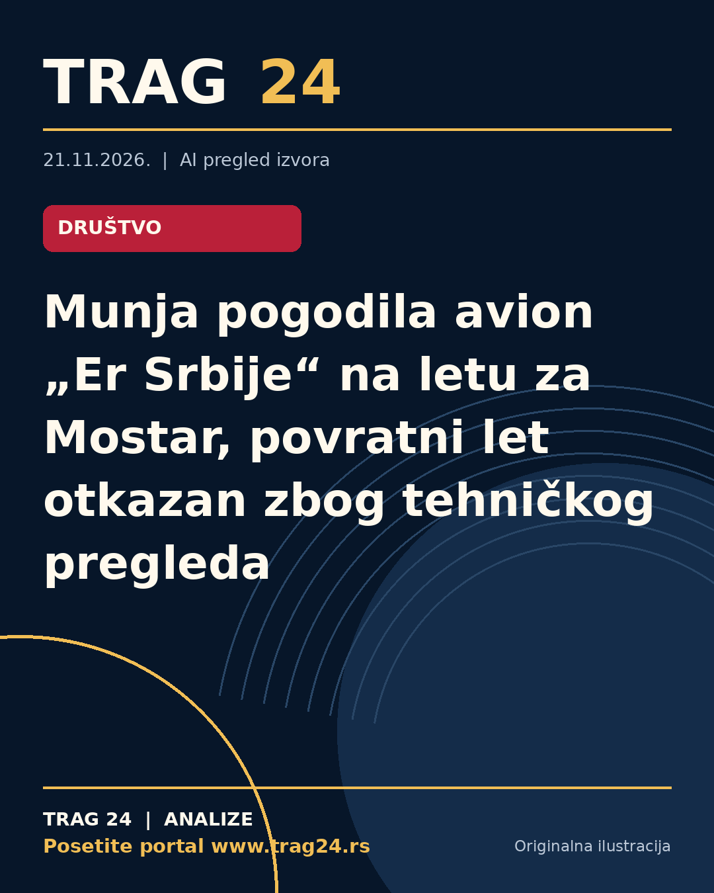

Munja pogodila avion „Er Srbije“ na letu za Mostar, povratni let otkazan zbog tehničkog pregleda

ŠTA SE DOGODILO
Avion kompanije „Er Srbija“ na letu JU634 iz Beograda za Mostar pogođen je munjom tokom leta u petak. Nakon bezbednog sletanja na Međunarodni aerodrom Mostar, avion je upućen na detaljan tehnički pregled. Usled toga je otkazan povratni let JU635 koji je trebalo da poleti iz Mostara ka Beogradu istog dana.
HRONOLOGIJA
Let JU634 poleteo je iz Beograda prema Mostaru u petak. Tokom leta, avion je pogodila munja usled nepovoljnih vremenskih uslova. Po sletanju u Mostar, posada je prijavila udar munje i avion je odmah upućen na tehnički pregled. Povratni let JU635, planiran za 15:15 časova iz Mostara, otkazan je zbog ovih okolnosti. Povratak aviona u Beograd očekuje se u subotu, po završetku neophodnih tehničkih provera.
ŠTA NAVODE IZVORI
Iz aviokompanije „Er Srbija“ i Direktora Aerodroma Mostar Marka Đuzela potvrđeno je da je avion zaštićen od udara munje, kao što to zahtevaju međunarodni standardi, ali su iz predostrožnosti obavljene dodatne bezbednosne provere. Kompanija je navela da je udar munje neuobičajena, ali poznata pojava u komercijalnom vazduhu i da su svi zahtevi bezbednosti prioritet. Putnicima su obezbeđeni alternativni vidovi prevoza, a kompanija se izvinila zbog neprijatnosti nastalih van njihove kontrole.
ŠTA JE POTVRĐENO
Potvrđeno je da je avion tokom leta pogodila munja, da je sletanjem na aerodrom u Mostaru prijavljena ova situacija, da je avion upućen na detaljan tehnički pregled i da je zbog toga otkazan povratni let za Beograd. Takođe je potvrđeno da će letelica, nakon završetka provera, krenuti u povratak narednog dana, te da su putnicima koji su izgubili let obezbeđeni alternativni prevoz i podrška.
ŠTA NIJE POTVRĐENO
Nije potvrđeno da je došlo do bilo kakvog oštećenja aviona, uključujući repni deo, iako je postojala takva sumnja. Aviokompanija nije izdala detaljnije informacije o eventualnim tehničkim kvarovima ili rezultatima pregleda nakon udara munje.
ŠTA OSTАJE OTVORENO: Ostaje nepoznato da li je tehnički pregled otkrio bilo kakve kvarove ili oštećenja na avionu i koje specifične mere su preduzete nakon udara munje. Takođe nije poznato koliko će trajati kompletan pregled i da li će biti promena u redovnom rasporedu letova na ovoj liniji.
Izvori
- https://nova.rs/vesti/drustvo/munja-pogodila-avion-er-srbije-na-letu-za-mostar-otkazan-povratak-letelica-upucena-na-pregled/
- https://www.blic.rs/biznis/munja-pogodila-avion-er-srbije-na-letu-za-mostar-letelica-upucena-na-tehnicki-pregled/hszs47j
- https://n1info.rs/vesti/munja-pogodila-avion-er-srbije-na-letu-za-mostar/
Ova analiza je pripremljena uz pomoć veštačke inteligencije na osnovu javno dostupnih izvora. Navodi izvora nisu nužno nezavisno potvrđeni.